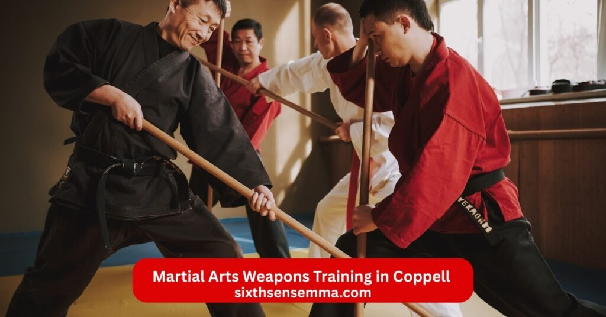
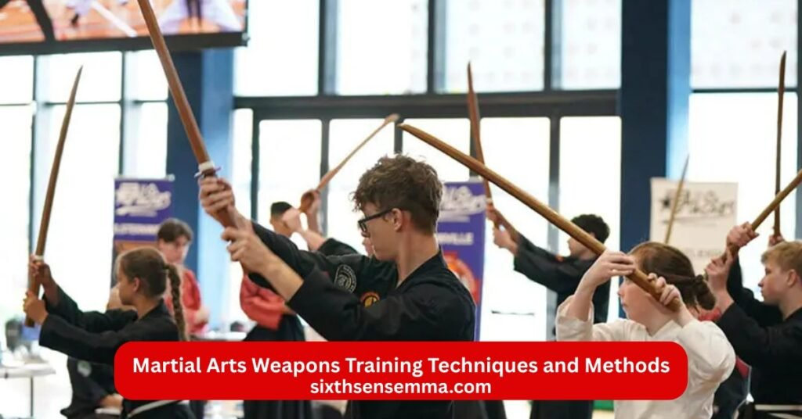
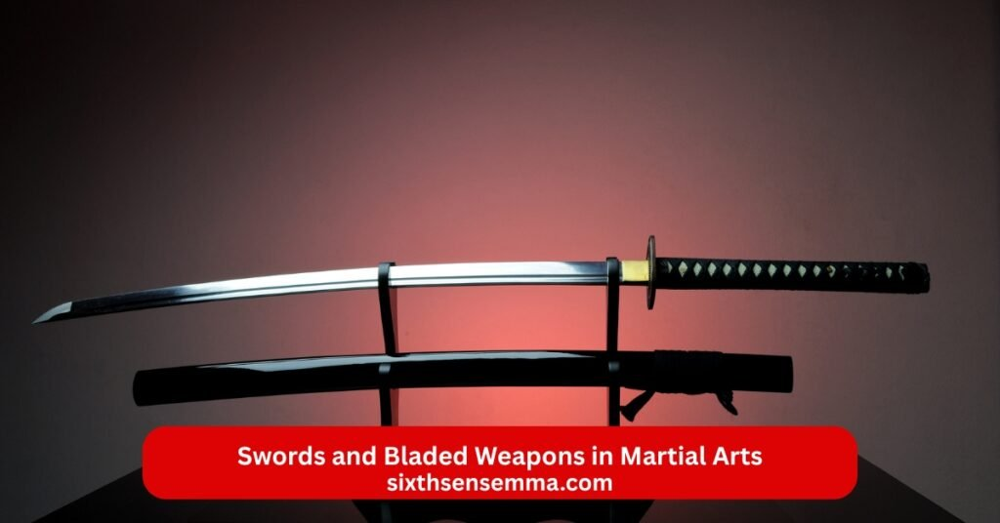

Martial Arts Weapons Training in Coppell TX Safe Techniques at SixthSense MMA

Martial Arts Weapons Training in Coppell offers a dynamic way for locals to elevate their skill and self defense abilities beyond empty hand basics. At SixthSense MMA in Coppell Texas student discover how martial art weapons add depth to physical fitness coordination and confidence. The academy in TX 75019 now includes practical weapon training martial arts that draw from traditional martial arts weapons and modern safe tools. Kid programs introduce martial arts practice weapons in fun session to build confidence and discipline. Adult class explore types of martial arts weapons like sticks staffs and blades through padded replicas for real growth.
Types of Martial Arts Weapons
Exploring types of martial arts weapons opens up a world of tools that enhance combat and technique. These items range from ancient designs to modern aids and fit into various martial arts styles. In Texas spots like Coppell TX classes at the academy introduce all martial arts weapons to build confidence and skill. Students learn how each weapon adds layers to self defense and discipline. From basic sticks to complex chains the martial arts weapons list includes options for every level. This variety keeps training fresh and helps athlete types improve their physical fitness. Instructor focus on proper use turns beginners into skilled users over time.
Striking Weapons (Bo Staff Nunchaku Escrima Sticks Kama)
Striking weapons form a core part of weapons in martial arts and offer direct ways to practice hits and blocks. The bo staff stands as a long wooden pole used in karate for sweeps and thrusts. It builds arm strength and coordination in class. Nunchaku involve two sticks linked by a chain or rope and demand quick wrist moves in kung fu styles. Escrima sticks come as short batons from Filipino arts and teach rapid strikes for self defense. Kama feature sickle blades on handles and add cutting motions to weapons karate.
Bladed Weapons (Katana Sai Tanto Kunai)
Bladed weapons bring sharp edges into martial arts weaponry and trace back to Japanese martial arts weapons. The katana serves as a curved sword famous in samurai traditions for precise cuts. Sai appear as pronged daggers that block and trap in Okinawan karate. Tanto act as short knives for close combat and stabbing techniques. Kunai work as throwing tools with blade and handle for distance attacks. These weapons used in karate demand respect and focus on control. In TX training spots instructor emphasize their role in traditional martial arts weapons.
Flexible and Chain Weapons (Chain Whip Rope Dart)
Flexible and chain martial arts weapons introduce fluid motions that differ from rigid tools. The chain whip uses linked metal segments for whipping strikes in Chinese arts like kung fu. It requires whip like control to hit targets accurately. Rope dart combines a weighted end on a long cord for throwing and retrieving in combat. These asian martial arts weapons build agility and distance awareness. In martial arts with weapons training they challenge student to adapt quickly. Coach at the academy teach their use in supportive settings.
Modern and Training Weapons (Foam or Padded Weapons)
Modern and training weapons adapt classic designs for safe practice like foam or padded versions of sticks and blades. In martial arts training weapon setups they help beginners grasp basics. Martial arts wepons like padded bo staffs mimic real weight but cushion impacts. They suit karate martial arts weapons for kid groups to build confidence. Adult classes use them to spar at high level. As best martial arts weapons for self defense they prepare for real scenarios gently.
Safety Tips for Martial Arts Weapons Training
Prioritizing safety in weapon martial arts keeps everyone protected while exploring fighting weapons. At martial arts school in Coppell guidelines ensure environment stays secure. Master stress basics like checking gear and space. This approach fits types of martial arts classes that include mixed martial arts weapons. Review from participants note how rules boost confidence. Enroll with awareness of these tips to maximize growth and minimize risks. They apply to all styles from taekwondo to karate.
Using Protective Gear
Wearing protective gear shields body parts during martial art weapons handling. Helmets guard heads from accidental strikes in nunchaku practice. Gloves protect hands when using escrima sticks. Padded suits cover torso for chain whip sessions. In Texas dojos coach require this for every level. It allows student to train boldly and improve without fear. Gear fits into self defense by simulating real protection. Kid especially benefit in karate for kids to stay safe. This habit builds discipline and resilience.
Practicing in a Controlled Environment
A controlled environment means clear space free of obstacles for weapons of karate. Mats absorb falls during kama drills. Marked areas limit movement in rope dart throws. In TX 75019 spots academy set up dedicated zones. This prevents slips and ensures focus on technique. Supportive setup helps athlete push limits safely. It suits champion training and beginner session. Controlled spots enhance physical fitness without chaos.
Learning Under Expert Supervision
Expert supervision from world champion or black belt guides proper moves with sai or katana. They spot errors in kunai throws and correct form. In coppell taekwondo certified instructor oversee every step. This keeps self safe and accelerates skill. Demo team examples show best practices. Supervision turns challenge into progress for age groups.
Proper Handling and Storage
Correct handling grips tanto firmly to avoid drops. Storage keeps weapons in racks away from reach. After class clean and inspect for damage. This routine in dojo promotes self control and longevity. Organize tools properly to prevent accidents. It reinforces discipline in martial arts.
Benefits of Training Martial Arts Weapons with Sixth Sense MMA Coppell TX
Students at Sixth Sense MMA in Coppell Texas discover real value when they add martial arts weapons practice to their routine. This academy in TX 75019 blends weapon training martial arts with core programs like Brazilian Jiu Jitsu and Muay Thai. The dojo now includes martial arts kali sticks sessions that bring in escrima sticks for practical self defense. Kid and adult groups benefit from tools that fit mixed martial arts approaches. Instructor guide everyone through martial arts training weapons in a supportive space. This helps build confidence and sharpens skill across age and level. Many see growth in physical fitness and self control.
Improved Coordination Speed and Accuracy
Adding martial art weapons to training at Sixth Sense MMA pushes coordination to new heights as student handle sticks or padded tools. Swinging escrima sticks or practicing flows demands quick hand eye links that boost speed. Over time in class movements become smooth and precise. This carries over to Muay Thai strikes or BJJ grips. Kid learn to track fast motions early which aids self defense skills. Adult find their reactions sharpen during spar. The environment encourages steady progress where accuracy grows with each drill. Instructor correct small details to help everyone hit targets better.
Enhanced Strength and Reflexes
Handling martial arts training weapon items builds strength in arms core and legs at the academy. Repetitive swings with kali sticks or martial arts practice weapons add resistance that tones muscles naturally. Reflexes improve as student block or counter sudden attacks in paired work. This ties into Muay Thai clinch power and BJJ rolls. Coach design session to raise heart rates while strengthening grips. Level advances show clearer physical fitness boosts. Champion paths often include this for edge in competition. Self awareness grows with quicker dodges and responses. The supportive setup lets pace match individual needs. Over months resilience rises alongside power for better self defense.
Boosted Focus Discipline and Mental Sharpness
Weapon martial arts demand full attention which hones focus during train at Sixth Sense MMA. Tracking a moving chain martial arts weapons or stick pattern clears the mind and builds discipline. Mental sharpness comes from planning strikes ahead in form. This helps kid in school and adult in work. Instructor stress breathing and calm under pressure. The dojo fosters habits that stick beyond mats. Review often mention calmer thoughts and better choices. Self control strengthens as student follow rules with weapons in martial arts. This side of martial arts weaponry supports growth in all areas.
Self Defense Skills Development
Practicing best martial arts weapons for self defense at the martial arts school prepares people for real situations. Tools like escrima sticks teach distance control and disarms that work against grabs or strikes. Integrated with BJJ ground work and Muay Thai hits it creates rounded self defense. Certified instructor simulate scenarios to build practical technique. High level options include unique martial arts weapons flows. Demo team displays show effective uses. This empowers everyone to handle threats with confidence.

Martial Arts Weapons Training Techniques and Methods
Sixth Sense MMA in Coppell teaches martial arts using weapons through step by step methods that fit all martial arts styles. Focus stays on safe effective ways to use types of martial arts weapons. Class start basic and build to complex patterns. Master oversee progress in a flexible curriculum.
Proper Handling and Grip Techniques
Starting with proper handling ensures safety and control over any martial arts weapon. Grip techniques vary by tool but center on firm yet relaxed holds. For escrima sticks or karate training weapons fingers wrap securely to allow quick releases. Instructor demonstrate angles that prevent slips. Student practice static holds then slow motions. This foundation aids all weapons used in martial arts from bo staff to padded versions. Correct grips reduce strain and boost power transfer.
Striking and Blocking Methods
Striking covers angles like forehand backhand and thrusts with fighting weapons. Blocking methods teach deflections and parries to redirect force. In session pairs drill basic hits on pads then advance to flowing combos. This mirrors weapons in karate or Filipino patterns. Coach emphasize timing to make blocks turn into counters. Practice builds instinct for combat.
Forms (Kata) and Drills for Skill Development
Forms or kata string sequences of moves into solo routines that ingrain patterns. Drills add partner work for timing and distance. At the academy kata with japanese martial arts weapons replicas polish flow. Repeated drills target weak spots and raise skill. This method suits traditional martial arts weapons and modern pads alike.
Footwork and Coordination While Using Weapons
Footwork keeps balance during weapon use with steps like advances retreats and angles. Coordination links feet to hands for seamless attacks. Drill focus on moving circles or lines while swinging asian martial arts weapons. This enhances evasion and positioning in self defense.
Safety Practices During Weapon Training
Safety practices include gear checks clear spaces and controlled speed. Protective gear like gloves and helmets guard impacts. Expert supervision watches form to prevent errors. Proper storage keeps tools organized.
Purpose & Styles of Martial Arts Weapons
Martial arts weapons serve clear goals in training and combat. They extend reach add power to strikes and teach control over distance. In many martial arts styles weapons help student understand body mechanics better than empty hand work alone. The purpose includes self defense historical preservation and physical fitness gains. Different cultures developed unique types of martial arts weapons for battlefield needs or personal protection. At places like Sixth Sense MMA in Coppell Texas class now explore these tools to round out technique. Instructor show how weapon martial arts build discipline and confidence. Kid and adult groups practice with safe versions to grasp self defense skills.
Traditional Systems (Kendo Okinawan Kobudo Karate)
Traditional systems treat weapons as core parts of the art rather than add ons. Kendo uses bamboo swords called shinai for full contact spar that builds timing and spirit. Practitioners wear armor and follow strict rules in this Japanese sword path. Okinawan Kobudo preserves farm tools turned into fighting weapons like sai tonfa and nunchaku. It pairs closely with karate for complete self defense. Karate styles from Okinawa often include weapons karate such as bo and kama to teach power generation from hips. These weapons in karate come from times when common folk needed hidden defenses. In TX dojo coach introduce replicas to show roots of karate training weapons.
Chinese Martial Arts Weapons (Three Section Staff Rope Dart Spears Broadswords)
Chinese martial arts weapons feature fluid and versatile designs from centuries of warfare. The three section staff breaks into linked parts for close or extended range strikes in kung fu. It demands wrist strength and timing. Rope dart throws a weighted tip on a long cord then retrieves it with spins for surprise attacks. Spears provide long reach with thrusts and sweeps in many styles. Broadswords often single or double allow chopping and slashing in dynamic patterns. These asian martial arts weapons emphasize flow and adaptability. Instructor in martial arts school teach their use through solo drills and partner work.
Modern Training Weapons (Foam/Rubber Versions Tactical Tools Kubotans)
Modern training weapons adapt classics for safe everyday practice. They suit martial arts practice weapons in beginner class. Tactical tools include collapsible batons or flashlights designed for self defense. Kubotans are small keychain sticks for pressure point strikes in close range. These martial arts training weapon options fit urban needs and legal carry. In Coppell academy certified instructor use them to bridge old styles with current realities.
Staffs and Sticks Used in Martial Arts Weapons Training
Staffs and sticks form the foundation of many weapon based martial arts. Their simple design teaches leverage distance and full body power. From long poles to short batons they appear across cultures in martial arts training weapons. Class at Sixth Sense MMA in TX 75019 include these for balanced growth. Coach stress basics that transfer to other martial arts wepons. Student of all level find them accessible yet deep.
Bo Staff – A long wooden staff
The bo staff measures about six feet and serves as a versatile karate martial arts weapons tool. Made from hardwood it allows sweeps thrusts and blocks at long range. Twirling builds coordination and speed. In Japanese martial arts weapons it features in katas that flow like dance yet strike hard. Session focus on spinning and striking pads to develop power from feet to hands. Instructor guide grip shifts for different attacks. This martial arts training weapon strengthens core and shoulders naturally.
Jo – A shorter Japanese staff
The jo reaches around four feet and offers quicker handling than the bo. Used in aikido and jojutsu it teaches precise blocks and joint locks. Its length suits close quarters and disarm technique. Drill pair empty hand against jo for realistic self defense. Student learn subtle wrist flicks for control. As one of the japanese martial arts weapons it bridges staff and sword work.
Escrima Sticks – Short sticks used in Filipino martial arts (Arnis Kali)
Escrima sticks measure about two feet and come in pairs for Filipino systems like Arnis and Kali. They train rapid strikes blocks and disarms that flow into empty hand. Patterns cover angles of attack for full coverage. Spar with padded versions builds reflexes. In weapon training martial arts they stand out for practicality in combat. Coach at the dojo integrate them with Muay Thai for mixed martial arts edge.
Hanbo – A half staff
The hanbo spans three feet and fits ninjutsu or self defense focus. It hides easily and works for leverage against larger foes. Techniques include chokes throws and strikes. Training emphasizes concealment and quick draw. This unique martial arts weapons tool boosts everyday carry options.
Dan Bong – A very short stick
The dan bong fits in the palm at around five inches. Korean styles use it for pressure points and joint manipulation. It attaches to keychains for discreet self defense. Technique targets nerves and weak spots. As a martial art weapons option it proves small tools can deliver strong results. Class drills show its role in close range survival.

Swords and Bladed Weapons in Martial Arts
Swords and bladed weapons hold a special place in martial arts weaponry. They represent precision power and historical combat roots across cultures. These types of martial arts weapons demand sharp focus and discipline from student who handle them. In weapon training martial arts blades teach edge control timing and respect for danger. Many martial arts styles evolved around them for war or self defense. At Sixth Sense MMA in Coppell TX class explore safe replicas to build skill alongside core programs. Instructor use padded or wooden versions to introduce concepts that enhance reflexes and coordination.
Katana – Japanese curved sword (Kenjutsu)
The katana features a single edged curved blade known for clean cuts in kenjutsu and iaido. Samurai used it for draw and strike technique that blend speed with power. Length around three feet allows versatile slashes and thrusts. In Japanese martial arts weapons it symbolizes honor and mastery. Session with bokken replicas mimic weight and balance safely. Coach teach proper draw grip and foot placement. This exotic martial arts weapons tool builds arm strength and precise targeting. Student learn to channel energy through the blade for full body combat flow. It ranks among best martial arts weapons for developing calm under pressure.
Jian – Chinese straight sword (Wushu Tai Chi)
The jian stands as a double edged straight sword often called the gentleman of weapons in martial arts. Used in wushu and tai chi for flowing circles and points. Its balanced design suits thrusting and slicing in elegant patterns. Chinese styles emphasize internal power and grace. Drill focus on wrist flexibility and posture alignment. In asian martial arts weapons it promotes harmony between body and blade. Instructor guide slow forms to build sensitivity. This martial art weapons option enhances self defense skills through deceptive lightness. Practice improves resilience and fluid motion for all age.
Bokken – Wooden practice sword
The bokken replicates katana shape in hardwood for safe training. It allows full power spar and kata without sharp risk. Japanese arts use it in kendo and aikido for partner drills. Weight trains muscles like real steel. As a martial arts practice weapons staple it bridges to live blades. Class start here for beginners to grasp angles and distance. Certified instructor stress control to avoid injury. This karate martial arts weapons alternative builds confidence in kid and adult alike. It fits martial arts training weapon needs perfectly.
Dao – Chinese saber
The dao offers a single edged curved broad blade for chopping in battlefield styles. Chinese military favored its heavy cuts and hooks. Variations include long handles for reach. Kung fu forms showcase powerful swings and shields. Technique generates force from hips and shoulders. In different martial arts weapons it contrasts jian lightness with brute impact. Session with replicas teach momentum control. This fighting weapons builds explosive strength and growth.
Kama – Sickles
Kama pair as short handled sickles from Okinawan farm tools turned weapons karate. Blades curve for hooking and slashing close range. Kobudo integrates them with blocks and traps. Often used in pairs for dual defense. Okinawan styles pair with karate empty hand. Drill cover reaps strikes and disarms. As unusual martial arts weapons they add versatility to self defense. Coach emphasize wrist snaps for speed. Practice sharpens coordination and adaptability.
Kris – Dagger (Silat)
The kris features a wavy blade dagger from Southeast Asian silat. Indonesian and Malaysian arts use it for piercing and close combat. Serpent shape channels force uniquely. Often poisoned historically for lethality. Technique includes quick stabs and twists. In martial arts using weapons it teaches vital point targeting. Unique martial arts weapons like this demand stealth and precision. Training focuses on grip variations and flow into grapples.
Why Choose SixthSense MMA for Martial Arts Weapons in Coppell TX
SixthSense MMA stands out in Coppell Texas for those seeking martial arts weapons alongside strong foundations. Located in TX 75019 the academy now includes weapon based martial arts like kali sticks in its curriculum. Student of every level find a premier spot to train safely. The dojo blends mixed martial arts with practical tools for complete self defense. Enroll in trial sessions to experience high level guidance. Review praise the supportive space that fosters champion mindsets. Champion paths grow here through challenge and structure.
Experienced Trainers with Proven Track Record
Experienced trainers at SixthSense MMA bring black belt expertise and world champion backgrounds to class. Some hold degree black belt ranks with title wins in championship martial arts. They coach athlete in sport and real technique. Certified instructor share proven methods from years of teaching. This track record ensures quality in martial arts in coppell. Demo team displays highlight their skill. Student benefit from mentors who push growth responsibly.
Personalized Programs and Small Group Classes
Personalized programs tailor to individual pace and goals in small groups. Class offer attention for kid karate for kids or adult advanced work. Flexible options let everyone improve at comfortable speeds. Curriculum organizes progress from basics to master levels. This approach builds resilience and self awareness in a supportive setting.
Focus on Safety and Proper Technique
Focus on safety means strict rules protective gear and controlled environment. Proper technique comes first to prevent issues in session. Instructor supervise closely during spar or drills. This priority suits types of martial arts classes with weapons. Self defense training stays effective yet secure for all age.
Convenient Location in Coppell TX
The convenient location in Coppell TX makes access easy for local families. Near Sandy Lake Rd areas the spot fits busy schedules. Martial arts school here serves the community with quality offering. Drive over for trial and join the academy vibe.
Contact US
Reach out to the team at SixthSense MMA for questions about martial arts weapons training or any class. The academy in Coppell Texas welcomes inquiries from student of every age and level. Instructor and coach stand ready to help with enroll details or trial session. This martial arts school focuses on self defense skills and physical fitness in a supportive environment. Contact options make it simple to start your path in martial arts in coppell. Many find the dojo easy to connect with for kid programs or adult mixed martial arts.
- Phone 469 972 7800
- Email: info@sixthsensemma.com
- Location: 817 S MacArthur Blvd #100 Coppell TX 75019 United States
Conclusion
Martial arts weapons training opens a powerful path to growth in physical fitness self defense skills and personal discipline. From classic types of martial arts weapons like the katana and bo staff to practical martial arts practice weapons such as escrima sticks and padded tools the variety builds coordination strength focus and confidence. At SixthSense MMA in Coppell Texas student of every age and level find a supportive environment to explore weapon training martial arts safely. The academy in TX 75019 blends these tools with strong foundations in Brazilian Jiu Jitsu Muay Thai and mixed martial arts. Experienced instructor and coach with black belt expertise guide each session with care for proper technique and safety.
Follow Us on Social Media
Stay connected with Sixth Sense MMA through our social media channels. Follow us for class updates, training tips, and a closer look at our self defense community.
FAQ’s
Many martial arts incorporate weapons training, either as the primary focus or as part of a broader curriculum. Examples include Kendo (bamboo sword), Eskrima/Arnis/Kali (sticks and blades from Filipino arts), Kobudo (Okinawan weapons like bo staff, sai, nunchaku, and kama), Kenjutsu (Japanese swordsmanship), Bojutsu (staff), Krav Krabong (Thai weapons), Silat (Southeast Asian blades), and HEMA (Historical European Martial Arts with swords and polearms). Traditional styles like Karate, Kung Fu, and Hapkido often include weapons such as tonfa, katana replicas, or spears.
The hardest martial art is subjective and depends on physical, mental, and technical demands, but Brazilian Jiu-Jitsu (BJJ) is frequently cited due to its complex techniques, strategic depth, intense live sparring, and long path to mastery (often 10+ years to black belt). Others like Capoeira (acrobatic and rhythmic demands), fencing (epee for precision), or MMA (combining multiple disciplines) are also considered extremely challenging.
Yes, styles exist that integrate firearms into martial arts training. Gun fu (or gun kata) combines guns with hand-to-hand combat and melee weapons, popularized in films but with real applications. Historical examples include Hōjutsu (Japanese gunnery with matchlock firearms). Modern tactical shooting systems treat firearms as extensions of close-quarters combat.
The U.S. Marine Corps is widely regarded as having the best program with the Marine Corps Martial Arts Program (MCMAP), a comprehensive belt-ranked system blending striking, grappling, weapons, and character development. It’s holistic and mandatory for all Marines. The Army’s Modern Army Combatives Program (MACP) is also strong, focusing on BJJ-influenced grappling.
CIA operatives receive practical hand-to-hand training, often drawing from Krav Maga (for real-world self-defense), Brazilian Jiu-Jitsu, Jeet Kune Do, and tactical shooting. Emphasis is on quick neutralization, disarms, and improvised weapons rather than traditional styles.
Gun-based martial arts are commonly called gun fu (combining firearms with kung fu-like movements) or gun kata. Historical Japanese versions are Hōjutsu (art of gunnery). Modern tactical systems may refer to integrated firearm training as part of close-quarters battle (CQB).
In modern MMA and effective combat sports, the “big 4” are Boxing (striking and footwork), Muay Thai (clinching and eight-limb striking), Wrestling (takedowns and control), and Brazilian Jiu-Jitsu (ground fighting and submissions). These form the foundation for most professional fighters.
Neither is universally “better”—it depends on goals. MMA excels in sport competition, fitness, and proven techniques through live sparring, making fighters highly skilled in controlled fights. Krav Maga is superior for pure self-defense in unpredictable street scenarios, focusing on quick threat neutralization, multiple attackers, and weapons (no rules or sparring limits). For real-world survival, Krav Maga; for overall fighting ability, MMA.
Train with us in Coppell
The first class is free. Shorts, a t-shirt and a water bottle. We lend the rest.
Book a free class